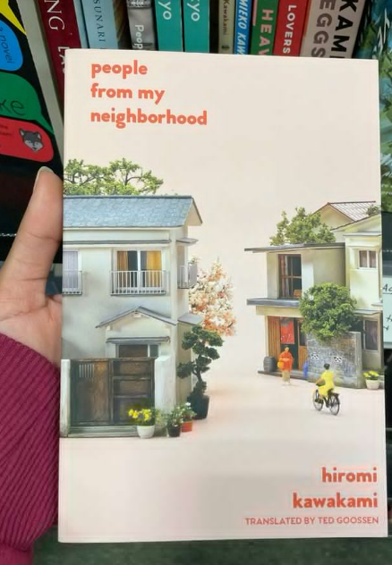

Chapter Reviews: Your Guide to the Best Books

Red Queen
Red Queen by Victoria Aveyard is a gripping fantasy that blends political intrigue with thrilling action. The story follows Mare, a common girl who discovers she has dangerous powers in a world divided by blood red and silver. With unexpected twists and a strong heroine, it keeps readers on the edge of their seat.

People from my Neighbourhood
People from My Neighbourhood by Hiromi Kawakami offers a beautifully quiet exploration of ordinary lives and small-town dynamics. Through its charming, interconnected stories, it captures the subtleties of human relationships and the unexpected magic of everyday moments.